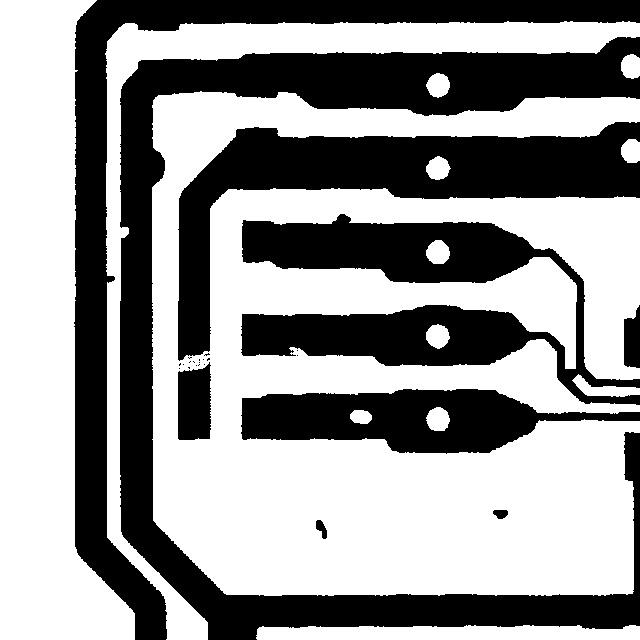

Confidence ranks a model's own answers fairly well, but it does not mean the same thing across models. Two of them say 90%+ on most trials and are wrong on about 40% of those calls. One cut-off cannot serve all seven.
—
—

results/predictions_*.jsonl —
image, claim, label, verdict. Nothing here is illustrative.